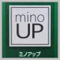

バイアグラの効果的な服用方法と処方
ミノキシジル外用薬
ミノアップ
発売元 東和薬品
更新日：2025年4月18日
ミノアップはミノキシジルを5％配合（100ml中5g）した壮年性脱毛症（AGA：男性型脱毛症を含む）における発毛、育毛及び脱毛(抜け毛)の進行予防の効果がある頭皮に直接塗布するタイプの外用薬です。大正製薬のリアップのジェネリック（後発）医薬品として2018年11月から東和薬品株式会社より発売されています。
頭皮に直接塗布することで毛包に直接作用し、ヒト毛乳頭細胞や毛母細胞の増殖を促し毛包を成長を促します。それにより乱れたヘアサイクルを正常に近づけ毛髪の成長を手助けするとされています。尚、明確な作用機序の詳細は未だに明らかにはなっていません。以下は東和薬品の公式ページの作用の説明を抜粋したものです。
１万円以上で送料無料。来院歴が無くてもOK。
即日配送。国内正規品のみ。土日も発送。
オンライン診療（郵送処方）
１万円以上で送料無料。来院歴が無くてもOK。即日配送。国内正規品のみ。土日も発送。
当院では、以下の価格でミノアップの処方を行っております。目安として1本に(60ml)で30日分とお考え下さい。また、初診料及び再診料は無料ですのでかかる費用はお薬代金のみとなります。
| ミノキシジル外用薬 | 処方単位 | 価格（税込） | |
|---|---|---|---|
|  |
ミノアップ 60ml ※2本以上は1本4,500円 |
60ml | 5,000円 |
|
120ml (60ml×2本) |
9,000円 | ||
| ミノアップに関する各種文書 | ||
|---|---|---|
|
添付文書 『説明書』 |
セルフ チェックシート |
公式ページ |
|
|
|
|
| 824KB | 429MB | -- |
- 次の人は使用できません。
- ミノキシジル配合の薬によりアレルギー症状を起こしたことがある人。
- 女性。［日本人女性における安全性が確認されていません。］
- 未成年者（20歳未満）。［国内での使用経験がありません。］
- 壮年性脱毛症（AGA：男性型脱毛症）以外の脱毛症（例えば、円形脱毛症、甲状腺疾患による脱毛等）の人、あるいは原因のわからない脱毛症の人。［本剤は壮年性脱毛症（AGA）でのみ有効です。］
- 脱毛が急激であったり、髪が斑状に抜けている人。［壮年性脱毛症（AGA）以外の脱毛症である可能性が高く、症状を悪化させる可能性があります。］
- 次の部位には使用しないでください。
- 本剤は頭皮にのみ使用し、内服しないでください。［ミノキシジルの経口投与は安全性が確立されておらず血圧が下がり過ぎる等の危険があります。］
- 頭皮に傷や湿疹、あるいは炎症（発赤）等があるとき。［傷等の症状を悪化させることがあります。］
本剤を使用する場合は、他の育毛剤及び外用剤（軟膏、液剤等）の頭皮への使用は、避けてください。また、これらを使用する場合は本剤の使用を中止してください。［これらの薬剤は本剤の吸収に影響を及ぼす可能性があります。］
お風呂上りに塗布する際は血流が良くなっているため頭皮がヒリヒリすることがあります。その場合は体温が少し冷めてから使用して下さい。お酒を飲む場合も同じく血流がよくなっているためヒリヒリする場合があります。
１日２回、１回１mLを薄毛の気になる箇所（頭皮）を中心に塗布して下さい。（未成年は使用しないこと） この用量以上に多く薬液を塗布しても効果が上がることはなく、むしろ副作用が出やすくなるのでご注意下さい。
万が一、目に入った場合は、すぐに水で洗ってください。
ミノアップは添加物にエタノールを含有しているためアルコールに弱いモノには薬液が付着することのないよう注意してください。
ミノアップは、１回１mLを計量して使用できるようにボトルに工夫がなされています。以下の「使用方法」を参考に正しく使用して下さい。薬液は60mL入りですのでボトル１本で30日分となります。
重度の肝機能障害の基準として以下のav「Child-Pugh（チャイルド・ピュー）分類で合計10点以上の分類Ｃに該当する人」があります。
参照元⇒肝臓機能障害の認定基準に関する検討会
報告書｜厚生労働省[PDF]
重度の肝機能障害の基準として以下のav「Child-Pugh（チャイルド・ピュー）分類で合計10点以上の分類Ｃに該当する人」があります。
参照元⇒肝臓機能障害の認定基準に関する検討会
報告書｜厚生労働省[PDF]
以下の画像のようにボトルが真下を向くよう逆さにします（2～3秒程度）。逆さにすると薬液1mLがたまります。
以下の画像のように薬液がたまった後、ボトルを真下に向けたまま回転部を矢印の方向に回して、突起を「●ぬる」マークに合わせます。「●ぬる」マークに合わせることで、1回の使用量（1mL）が計量されます。
逆さのまま回転部の先端を頭皮に垂直に軽く押し当てると、薬液が出てきます。薬液が完全に出なくなるまで、髪の薄い部分にトントンと1～2cm間隔で塗布してください。
【ポイント】以下の画像のように薬液は外側から見える範囲以外にも充填されております。半分以上塗布することで、液面が下がってくるのが確認できます。

使用後は、回転部の突起を必ず「●ぬる」マークに合わせたまま、キャップを閉めて保管してください。
次の人は使用前に医師又は薬剤師に相談してください。
今までに薬や化粧品等によりアレルギー症状（例えば、発疹・発赤、かゆみ、かぶれ等）を起こしたことがある人
高血圧の人、低血圧の人。［本剤は血圧に影響を及ぼす可能性が考えられます。］
心臓又は腎臓に障害のある人。［本剤は心臓や腎臓に影響を及ぼす可能性が考えられます。］
むくみのある人。［むくみを増強させる可能性が考えられます。］
家族、兄弟姉妹に壮年性脱毛症の人がいない人。［壮年性脱毛症の発症には遺伝的要因が大きいと考えられます。］
高齢者（65歳以上）。［一般に高齢者では好ましくない症状が発現しやすくなります。］
次の診断を受けている人。
甲状腺機能障害（甲状腺機能低下症、甲状腺機能亢進症）。
［甲状腺疾患による脱毛の可能性があります。］
使用後、次の症状があらわれた場合は副作用の可能性があるので、直ちに使用を中止し、この説明書を持って医師又は薬剤師に相談してください。
| 関係部位 | 症状 |
|---|---|
| 皮膚 | 頭皮の発疹・発赤※、かゆみ、かぶれ、ふけ、使用部位の熱感等 |
| 精神神経系 | 頭痛、気が遠くなる、めまい |
| 循環器 | a胸の痛み、心拍が速くなる |
| 代謝系 | 原因のわからない急激な体重増加、手足のむくみ |
6ヵ月間使用して、次のいずれにおいても改善が認められない場合は、使用を中止し、この説明書を持って医師又は薬剤師に相談してください。 脱毛状態の程度、生毛・軟毛の発生、硬毛の発生、抜け毛の程度（太い毛だけでなく細く短い抜け毛の減少も改善の目安となります）。 ［壮年性脱毛症以外の脱毛症であったり、脱毛が他の原因によるものである可能性があります。］
使用開始後6ヵ月以内であっても、脱毛状態の悪化や、次のような脱毛が見られた場合は、使用を中止し、この説明書を持って医師又は薬剤師に相談してください。
頭髪以外の脱毛、斑状の脱毛、急激な脱毛等。
［壮年性脱毛症以外の脱毛症であったり、脱毛が他の原因によるものである可能性があります。］
毛髪が成長するには時間がかかります。効果がわかるようになるまで少なくとも4ヵ月間、毎日使用してください。［ミノキシジルローション5％製剤の有効性は4ヵ月使用後から認められております。］
毛髪が成長する程度には個人差があり、本剤は誰にでも効果があるわけではありません。
効果を維持するには継続して使用することが必要で、使用を中止すると徐々に元に戻ります。［本剤は壮年性脱毛症の原因を取り除くものではありません。］
画像の「使用期限：2027年5月まで」のミノアップは2025年1月4日時点での在庫です。当院では、AGA治療の患者様のご利用が多くミノアップも定期的に処方させていただいているため在庫が滞留することはありません。よって使用期限の短いものを処方することはありませんのでご安心下さい。
仮に古いものであっても使用期限を過ぎていなければ効果に影響はございません。
しかしながら、使用期限が過ぎてしまったミノアップは頭皮に悪影響を及ぼす可能性があるので、使用は避け必ず廃棄して下さい。
 【ご来院不要！】お薬を郵送にて処方致します。【初診の方も可】
【ご来院不要！】お薬を郵送にて処方致します。【初診の方も可】
 バイアグラの女性への効果｜ED治療のススメ
バイアグラの女性への効果｜ED治療のススメ